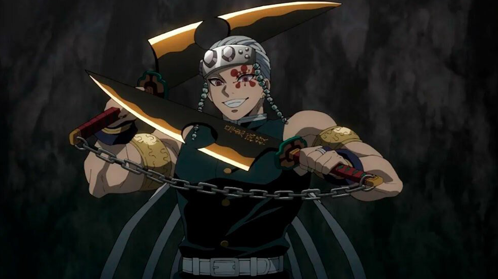
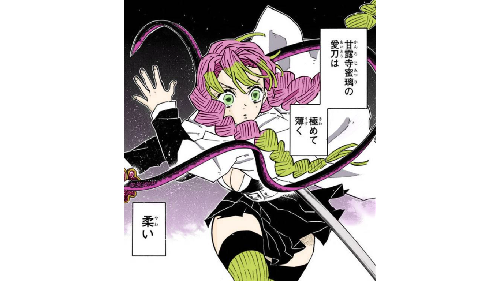
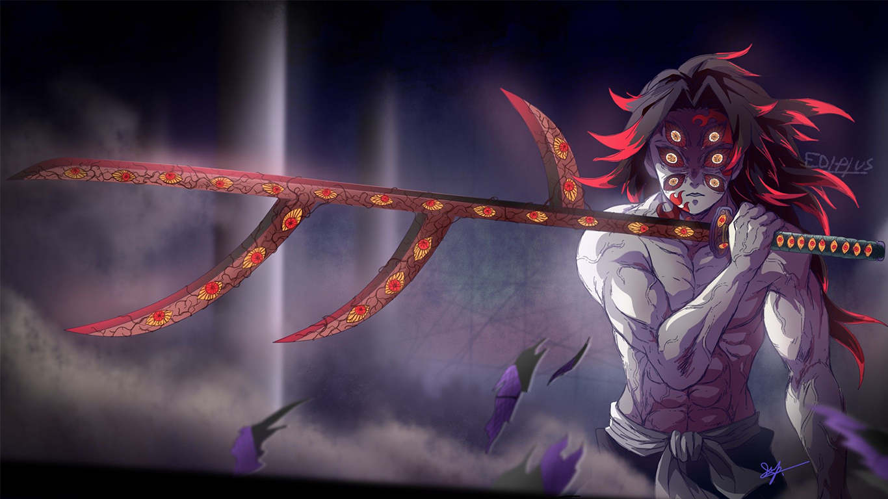
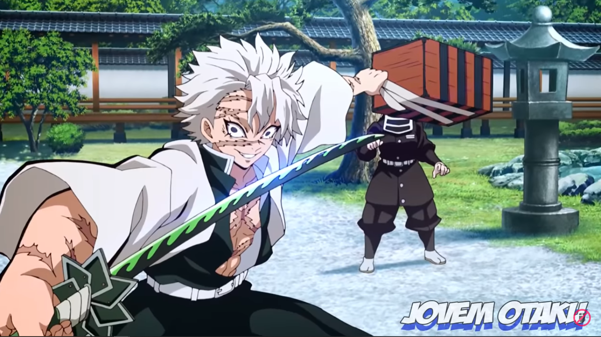
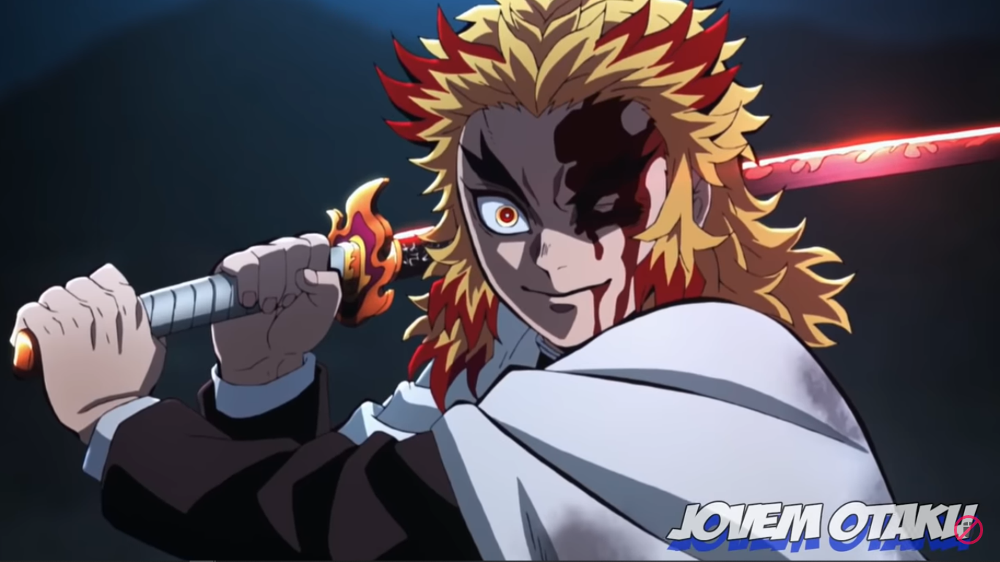

ESPADAS
Demon Slayer (Kimetsu no Yaiba), é substancialmente apresentado com uma mitologia por trás, de alguns de seus principais elementos. As cores das espadas de alguns personagens, representam muito mais do que um simples elemento na história, ela diz muito sobre o potencial que envolve esse determinado espadachim em combate, o que torna interessante acompanhar, cada um deles, e principalmente quando se faz necessário a utilização dessas espadas. Conheça 14 cores e significados das espadas de Demon Slayer:
Espada Velhelha Carmesim
Apesar de serem muito poderosas normalmente, há uma maneira de tornar as Lâminas Nichirin ainda mais fortes. Ao aumentar a temperatura da lâmina, ela acabará se tornando vermelha. Lâminas Nichirin vermelhas conseguem cancelar a regeneração de demônios e em alguns casos até mesmo queimá-los a um nível celular, criando feridas que não podem ser curadas.
Uma Lâmina Nichirin Vermelho Carmesim só pode ser criada através de uma transferência de calor. Durante todo o mangá de Demon Slayer, apenas três formas de se criar uma lâmina vermelha foram mostradas.
Espada Preta - Sol
Considerada a mais poderosa de todas as espadas. A espada de cor preta é empunhada por Tanjiro Kamado. Seu poder que pode mesclar diversos tipos de respiração, por muito tempo, manteve sua verdadeira origem em segredo. O seu elemento é o sol, e isso faz com que algumas habilidades que podem ficar adormecidas, durantes anos em seu portador, sejam devidamente acordadas, ao seu manusear este tipo de espada. Figura entre as cores e significados das espadas de demon slayer mais importantes.
Espada Amarela - Trovão
Tendo como principal elemento o Trovão, a personalidade de Zenitsu, se transforma, quando consegue acessar toda a força de sua espada na cor amarela, já que ela, faz com que sua velocidade, se torne tão rápida, fazendo que um inimigo, não consiga, perceber o ataque. Quando acessa, esses poderes, sua personalidade também muda, deixando de ser um covarde, se tornando corajoso, em combate.
Espada Azul - Água
o Pilar da Água, é quem empunha a espada azul. Tendo como elemento, a água, ele herdou a espada de Sakonji Urokodaki, o seu sensei. O personagem foi capaz de derrotar demônios, que se mostravam impossíveis de serem derrotados. Sua espada, foi a primeira a ser apresentada em Demon Slayer e não apenas isso, ela é de fato uma das mais perigosas e poderosas, com uma grande fama, até mesmo, entre seus oponentes.
Espada Ambar - Som

Tengen Uzui, o Hashira do Som é o empunhador da Dupla Nichirin Cleavers, que lhe confere uma força sobre-humana, sendo temido, até mesmo pelas Luas Superiores. Como parte de sua personalidade e sua dominação da respiração do som, o hashira, se destaca, ao utilizar suas espadas de cor âmbar, como uma arma, quase potencialmente destrutiva, ao seus inimigos.
Espada Azul Lavanda - Inseto
Shinobu Kocho, desenvolveu uma variação da Respiração da Água e da Flor, conhecida como a Respiração do Inseto. Nenhum outro hashira, chegou tão longe, utilizando os seus conhecimentos, para evolução de suas habilidades. A personagem é empunhadora de espada na cor azul-lavanda e apesar de sua personalidade gentil, ela esconde, uma guerreira extremamente forte e perspicaz com os seus objetivos.
Espada Branca - Névoa
A cor branca, tem como principal elemento, a névoa. Conhecida como a primeira cor das espadas em Demon Slayer, ficou conhecida por ser portada por Muichiro Tokito, o Pilar da Névoa. A respiração da névoa é uma derivação da respiração do vento, que é representada pela cor verde. As principais características de quem empunha a espada branca, remetem a indiferença, já que em muitos momentos, uma espécie de fúria e reflexos sobrenaturais, serão os resultados que o espadachim precisará, o que se justifica, totalmente necessário, estar alinhado como uma personalidade lógica e dispersa.
Espada Cinza - Pedra
Tendo como elemento principal, a pedra, a espada de cor cinza, empunhada por Gyomei Himejima, o Hashira da Pedra, está atrelada à estender a força física do espadachim. Isso faz dessa espada, a mais excêntrica de todas, dada a dimensão que o seu portador pode alcançar. Chega a ser contraditório, que Gyomei Himejima, com uma personalidade tão serena, seja o seu empunhador, mas não se engane, ele pode acessar o Mundo Transparente e se tornar temporariamente, o mais poderoso entre todos os Hashiras.
Espada Indigo Cinza - Fera
Inosuke, apesar de explosivo é portador de uma das mais poderosas catanas de Demon Slayer. Tendo como elemento a fera, a espada de cor índigo-cinza, se mostra uma escolha sábia quando se busca lutar contra demônios. O personagem que viveu durante anos nas montanhas, é dominador da Respiração da Fera, uma derivação, da Respiração do Vento. Impulsivo, Inosuke, é um espadachim que possui uma Nichirin com duas lâminas.
Espada Lavanda - Serpente
Obanai Iguro, o Pilar da Serpente, é empunhador de uma espada de cor lavanda. Durante, algum tempo, Obanai Iguro se repreende, devido o seu assado e a história que envolve o seu próprio clã. Uma espécie de vergonha, assombra o hashira da serpente. Ele pode modificar a forma de sua espada e torna-la uma serpente, com ataques direcionados e sinuosos, que dependendo da distração de seu oponente, pode atingir qualquer lugar.
Espada Rosa - Amor

A espada de cor rosa, tem como elemento o amor, sendo empunhada por Mitsuri Kanroji, a Pilar do Amor. A personagem demostra uma personalidade emotiva e passional, tendo uma particularidade interessante, a espada não foi herdada. Sob o comando de Mitsuri Kanroji, a espada é capaz de extrapolar os limites da força física e resistência.
Espada Rosa Claro - Flor
Kanao Tsuyuri e Kanae Kocho, ambas empunhadoras de espadas rosas claro, não possuem como elemento o amor, mas são da respiração da Flor, uma derivação da Respiração da Água, representadas pelas personalidade estranha e neutra de suas espadachins.
Espada Roxa - Lua

O oni, conhecido como por integrar as 12 Luas Demoníacas, Kokushibo é subordinado de Kibutsuji Muzan. Ele foi o primeiro a se tornar um Lua Superior e detêm uma espada de cor rocha, além das habilidades provindas da Respiração da Lua.
Espada Verde - Vento

Sanemi Shinazugawa, Pilar do Vento, empunha uma catana nas cores verde e preto. O poder do espadachim que empunha uma espada de cor de verde, está alinhado com uma personalidade agitada, teimosa e com uma forte presença. A utilização da espada, confere ao seu portador, golpes extremamente fortes em formatos de vendavais, com reflexos que ultrapassam a capacidade dos seres humanos de compreender.
Espada Vermelha - Chama

Sua espada, seja pela força e detalhes, é também uma das cores e significados das espadas de demon slayer, mais importantes. Não se engane, com sua personalidade gentil, ele é o empunhador da espada vermelha. A espada ficou bem conhecida, após a aparição no filme Demon Slayer: Kimetsu no Yaiba – Mugen Train, revelando ao público, o elemento da espada, a chama.